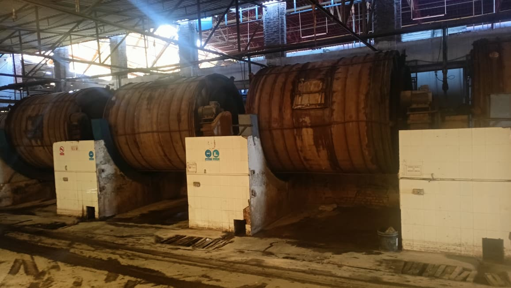
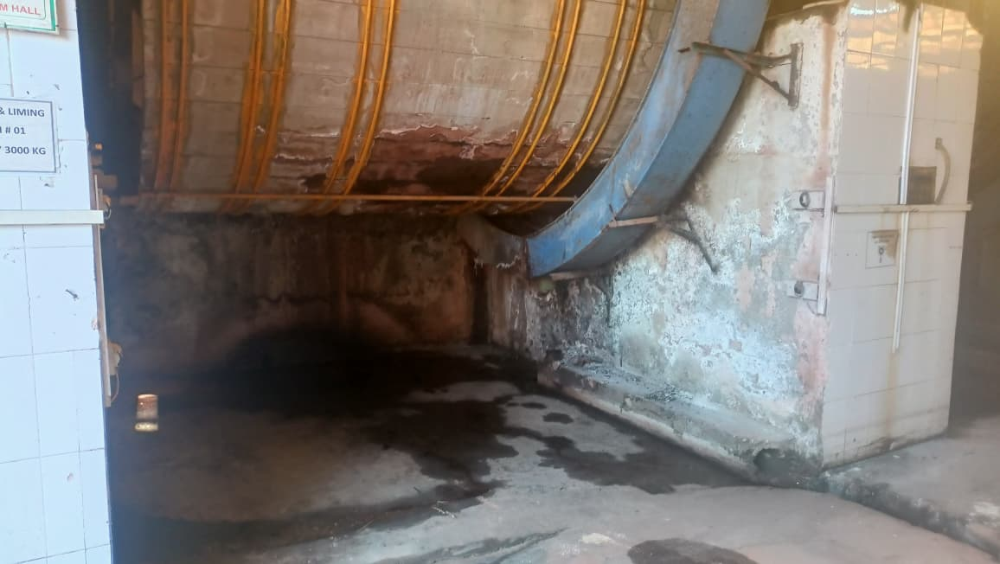
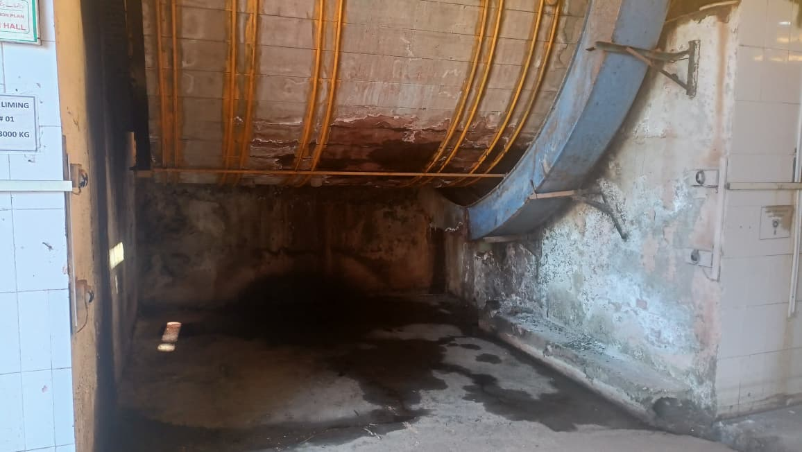
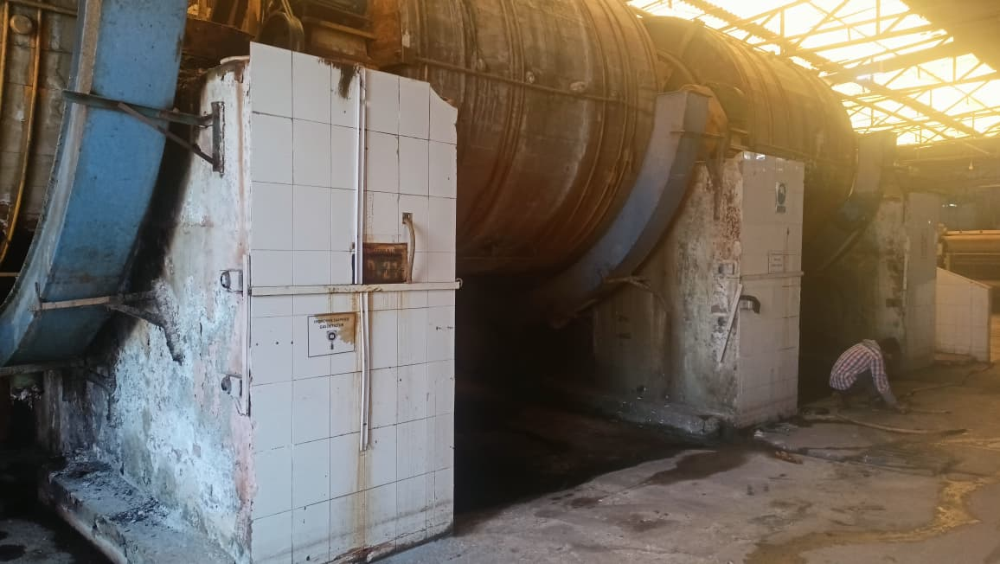
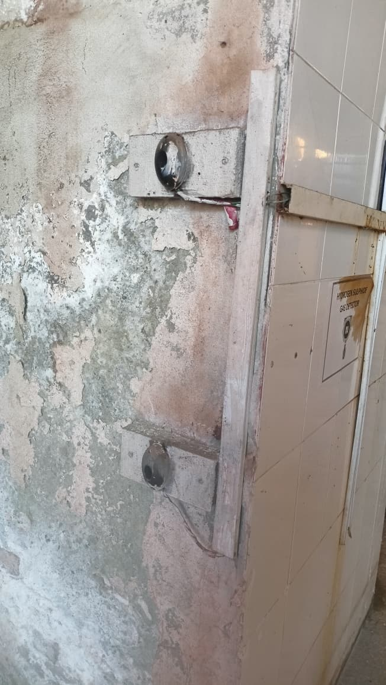
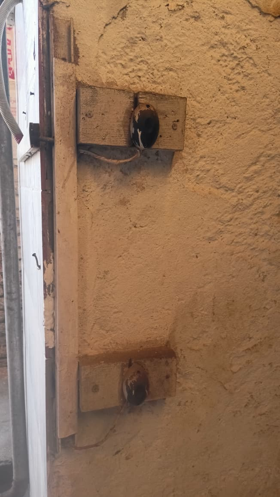

Infrared Beam Sensors as Safety
Location: KTM Leather(MG Group),Multan
This project involved the design and installation of a
Safety Automation System for
KTM Leather Factory using
Infrared Beam Sensors.
The system was implemented to ensure human safety by automatically
stopping drum operation whenever a person or object crosses the
safety zone in front of the drums.
System Overview
The safety system was installed on a total of
30 drums inside the factory.
Each drum was equipped with
two pairs of infrared beam sensors
to ensure complete area coverage and reliable detection.
The entire installation, wiring, and commissioning were
carried out independently as part of this project.
Sensor Configuration
- Infrared Beam Sensors used for human safety
- Each drum fitted with 2 sensor pairs
- Each pair consists of a Transmitter and a Receiver
- Sensors mounted in front of the drum working area
- Two pairs connected in series for enhanced safety coverage
Safety Operation Logic
- Infrared beam remains active during normal operation
- When a human or object crosses the beam, the signal is cut off
- Signal cutoff triggers the safety circuit
- Drum operation immediately stops as a safety response
- System resets automatically after safety interruption
Integration with Drive System
- Sensors connected to the drum inverter through relay logic
- Inverter model used: PUMA P100
- Relay system designed and assembled for signal interfacing
- Safety signal directly interrupts inverter control circuit
Installation & Wiring
- Complete wiring performed independently for all 30 drums
- Proper cable routing and secure sensor mounting
- Relay panels wired and tested on-site
- System tested for reliability and fast response
Tools & Components Used
- Sensors: Infrared Beam Sensors
- Drives: PUMA P100 Inverters
- Control: Relay-based safety logic
- Installation: Complete field wiring & commissioning
Project Outcome
The infrared safety system successfully enhanced operator safety
across all 30 drums at KTM Leather Factory.
The use of dual sensor pairs per drum ensured reliable detection,
minimized risk, and provided immediate shutdown during unsafe conditions.
A fully independent installation and custom relay logic
resulted in a robust, dependable, and maintenance-friendly safety solution.
Project Images






← Back to PLC Projects